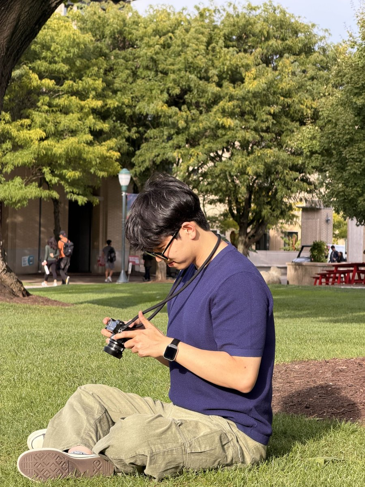

IROS 2026
Hyoseok Ju주효석
Integrated M.S./Ph.D. Student · APRL, DGIST
I am an integrated M.S./Ph.D. student in the Department of Robotics and Mechatronics Engineering at DGIST, working in the Autonomy and Perceptual Robotics Lab (APRL) under the supervision of Prof. Giseop Kim.
My research focuses on SLAM, particularly deep monocular visual SLAM and feed-forward 3D foundation models, with an emphasis on keeping maps scale-consistent across long trajectories, sessions, and robots.

Research Interests
- SLAM
- Visual SLAM
- 3D Foundation Models
- Feed-forward SLAM
News
- 🏆 LT-Mem received the Best Paper Award at IROS 2026! Huge congrats to Yumin Lee!
- Started the integrated M.S./Ph.D. program at DGIST.
- Two papers, LT-Mem and Mag4D-SLAM, accepted to IROS 2026.
- MR.ScaleMaster released on arXiv.
- ScaleMaster accepted to ICRA 2026.
- Joined APRL at DGIST as an M.S. student.
Publications
International
IROS 2026
arXiv 2026
ICRA 2026
Domestic
KSME 2025
핸드헬드 in-situ 바이오프린팅을 위한 적응형 바이오 잉크 출력 제어 연구
KSME Conference (대한기계학회 춘추학술대회), 2025
KRoC 2025
Feedback Control for Consistent Bio-Ink Line Width Printing Using a Real-Time Line Width Estimation Algorithm
Korea Robotics Society Annual Conference (KRoC, 한국로봇종합학술대회), 2025
ICROS 2023
다중 자율 로봇 주차 시스템
ICROS Annual Conference (제어로봇시스템학회 국내학술대회), 2023
Gallery
View all →Education & Experience
- 2025 – presentIntegrated M.S./Ph.D., Robotics and Mechatronics Engineering — DGISTAdvisor: Prof. Giseop Kim · Started as M.S. student (2025.09), transferred to integrated program (2026.09)
- 2024 – 2025Undergraduate Researcher & Research Intern — Korea Institute of Science and Technology (KIST)
- 2018 – 2025B.S., School of Robotics — Kwangwoon University